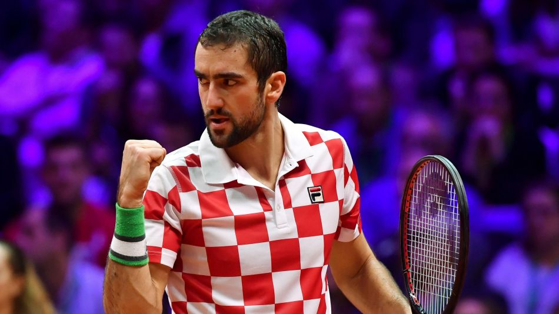
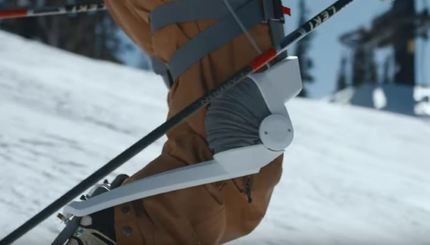

À la une : Pour les Bleus, la route de l'Euro passera par l'Islande et la Turquie

EURO 2020 - La France connait le programme qui va l'occuper de mars à novembre 2019. Les champions du monde
évolueront dans le groupe H des éliminatoires de l'Euro 2020 avec l'Islande, la Turquie, l'Albanie, la Moldavie et
Andorre. Des têtes connues et d'autres beaucoup moins.
Lire la suite...
Pour les Bleus, la route de l'Euro passera par l'Islande et la Turquie
EURO 2020 - La France connait le programme qui va l'occuper de mars à novembre 2019. Les champions du monde
évolueront dans le groupe H des éliminatoires de l'Euro 2020 avec l'Islande, la Turquie, l'Albanie, la Moldavie et
Andorre. Des têtes connues et d'autres beaucoup moins.
Lire la suite...
Coupe Davis, le point final idéal

COUPE DAVIS – Avant une refonte en forme de démantèlement radical, la toute dernière finale de Coupe Davis s'est
achevée dimanche au stade Pierre-Mauroy. Le sacre de Marin Cilic, tout comme comme celui de la Croatie, ont offert une
conclusion idéale à une époque désormais révolue.
Lire la suite...
Toulon s'impose avec le bonus offensif face à Grenoble

TOP 14 - Bonus offensif obtenu en toute fin de match grâce à un essai de Guilhem Guirado. Les 2 autres essais ont
été marqués par Mathieu Bastareaud et Josua Tuisova.
Lire la suite...
Les meilleurs projets open source 2018 : Vscode, React-natif, Tensorflow

Les principaux projets open source de Github pour 2018 incluent Tensorflow, l'outil d'automatisation de l'IT Ansible et Kubernetes. Les domaines en forte croissance sont l'apprentissage machine, l'impression 3D et l'analyse de
données.
Lire la suite...
L'avenir d'Amazon Echo et de Google Home s'annonce effrayant

Nous avons tendance à suivre un chemin bien tracé en ce qui concerne les nouvelles technologies.
Premièrement, nous sommes conquis par elles. Ensuite, nous en devenons dépendants. Ce n’est qu’après qu’un temps non négligeable se soit écoulé que nous réalisons - ou crions : « Que diable suis-je en train de faire ? »
Lire la suite...
Yamaha parie sur un robot wearable pour les skieurs

Le produit phare de Roam, Elevate, s'adresse aux 16 millions d'Américains qui pratiquent les sports d'hiver. Et sans nul doute bientôt aux skieurs du monde entier.
Lire la suite...